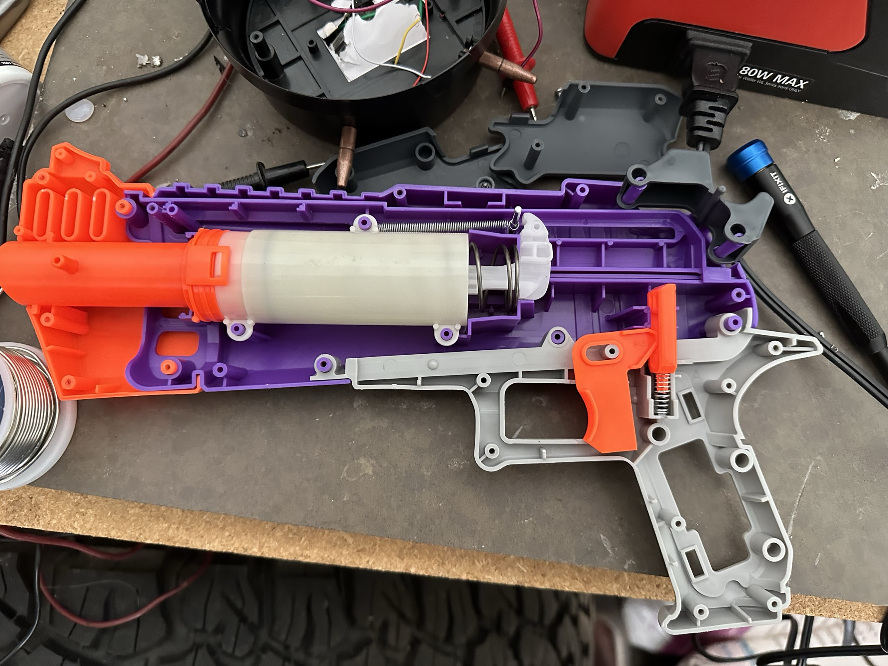
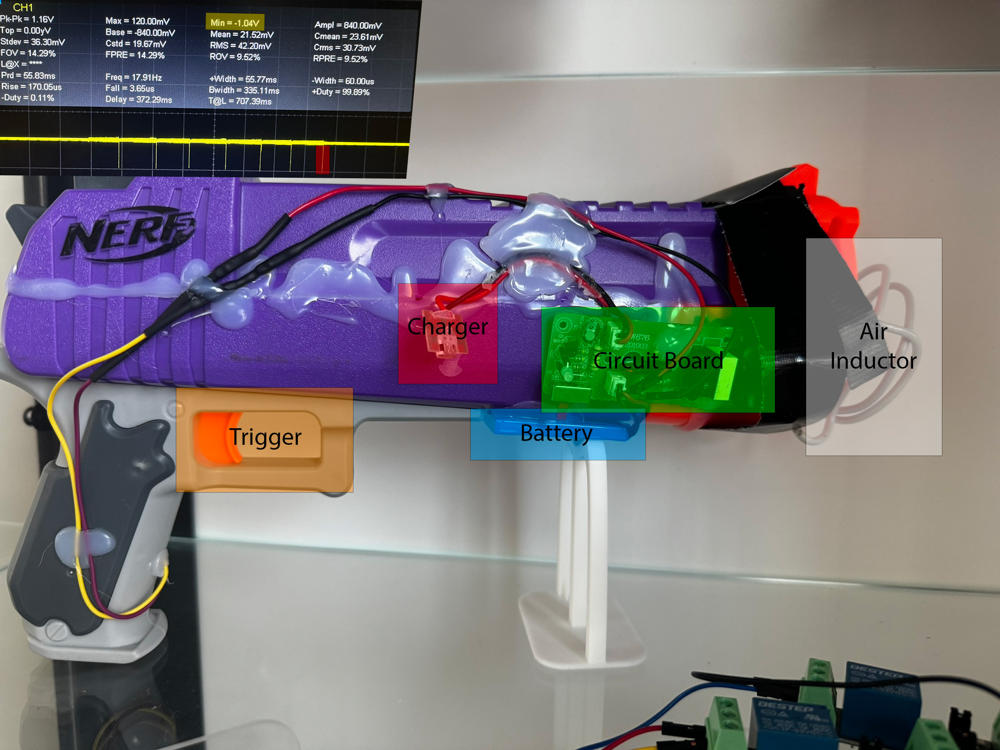
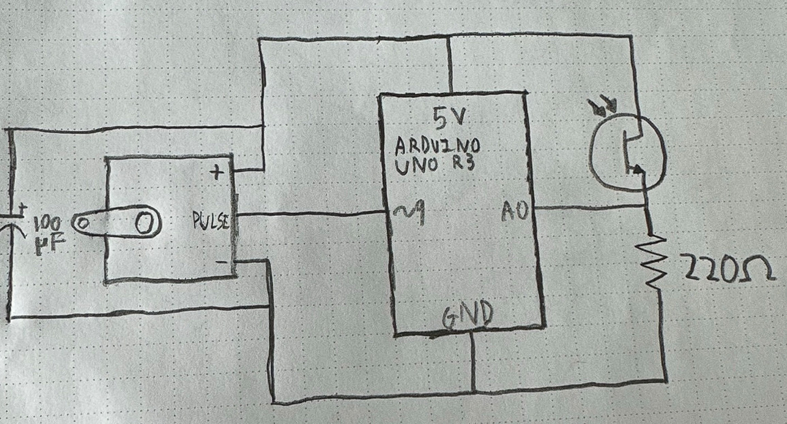
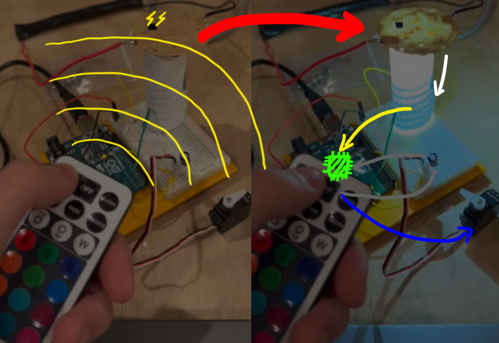
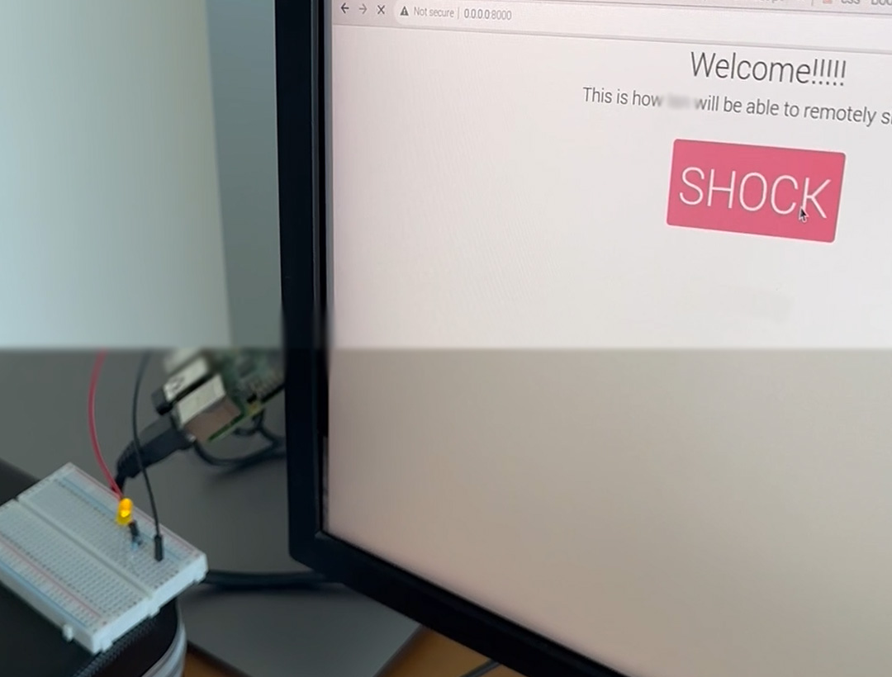
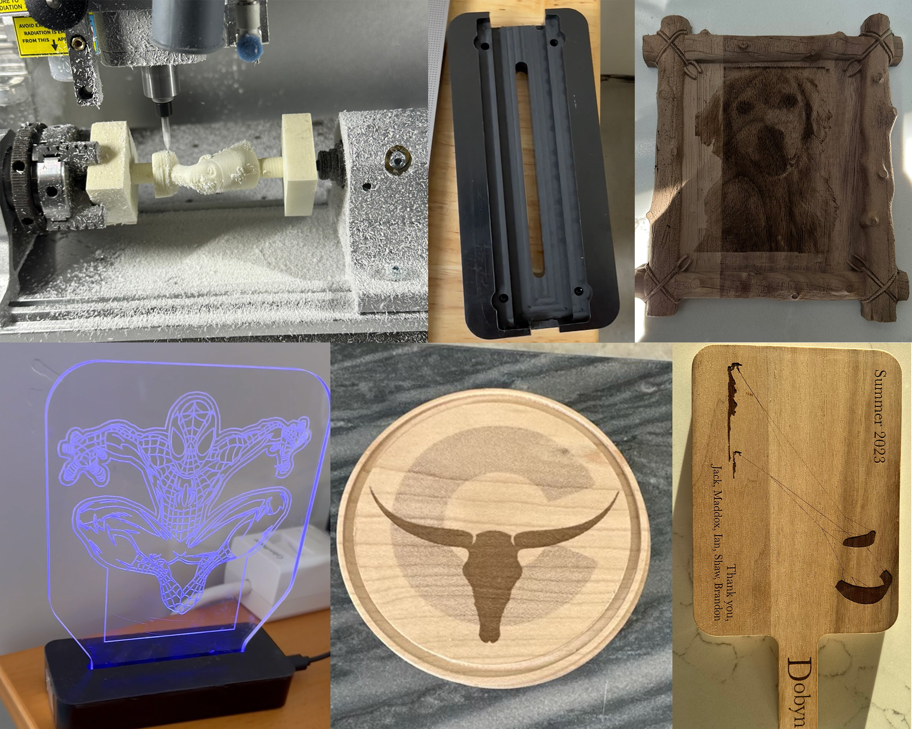
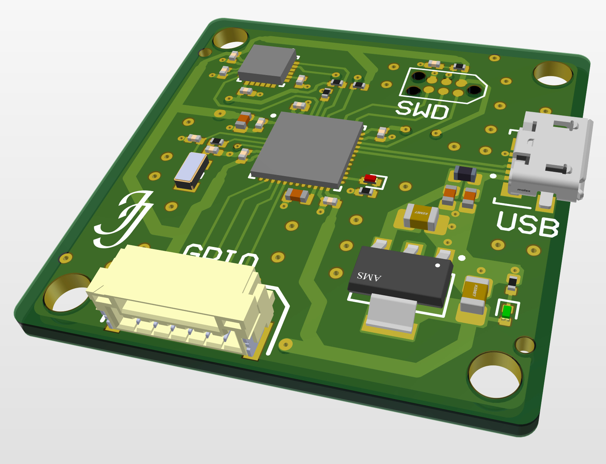
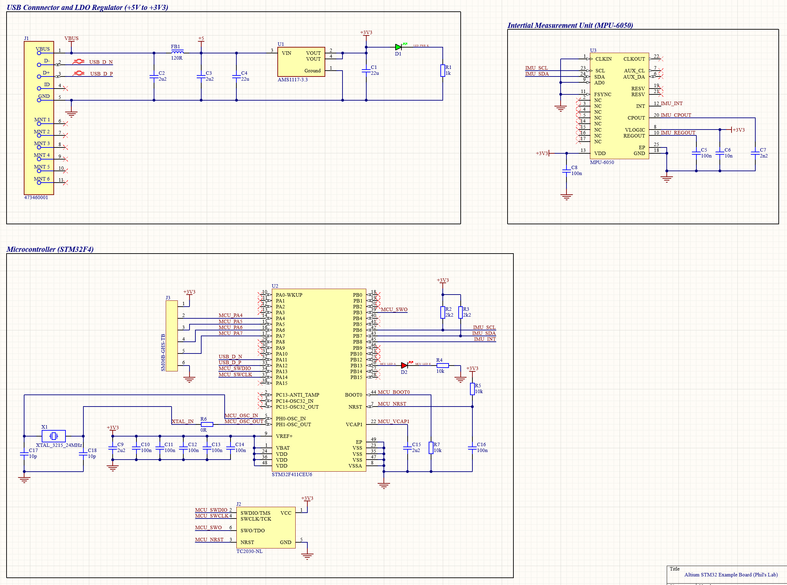
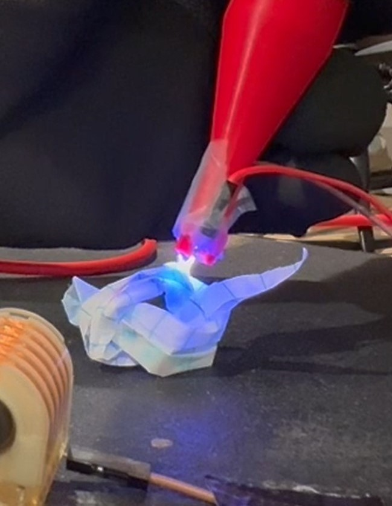
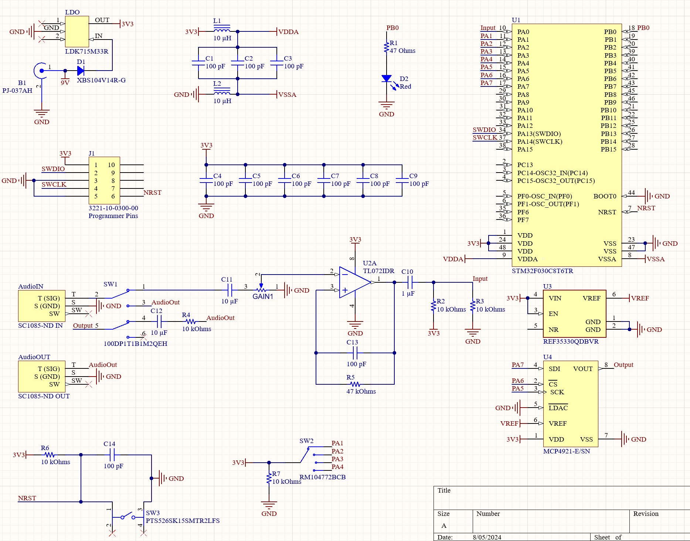

After watching a YouTube video about it, I began my electronics career by building an EMP gun. The device works by exploiting a fundamental property of physics called induction. As an electron moves (electrical current), it makes a magnetic field, and the same logic applies to the opposite: as a magnetic field changes, it induces a current in a nearby conductor. My EMP gun generates a rapidly changing magnetic field using a bug zapper and a spark gap to create fast pulses. This field can induce currents in nearby electronics, which can fry them.
EMP Gun

June 16th 2022

The final product looks messy, but I wanted to give it a 'DIY' feel. It works by using a battery (thin blue box on the bottom front) to power the circuit from a bug zapper (main circuit board), which has a small spark gap connected to an air inductor (wire coil). I took measurements on my oscilloscope and saw a minimum of -1.04 volts, which is enough to destroy some components due to the unprotected reverse polarity.
June 16th 2022
Smart Switch

I have to walk to every light switch in my house to toggle it. For my second electrical project, I decided to design a remote-controlled switch that could act as a hand pressing something. I had to learn about schematics and memorize each component's symbols to plan for this project. I put what I had learned to the test with this project by drawing my first schematic. While it was straightforward, and there are a thousand different things that I would do differently now, it worked.
December 21, 2022

I had no concept of infrared sensors or subGHz communications, so I stripped apart a remote-controlled light and detected if it was on with a photosensitive diode. I then used an Arduino to control a small servo motor that could press something I taped it to. I also attempted to block external frequencies with a polarized 100 microfarad capacitor (which didn't really do anything). Despite its flaws, my smart switch project was a turning point in my career. It allowed me to use my limited knowledge to solve problems creatively.
December 29, 2022
Online shocker

To put my coding and electronics skills to the test, I decided to build a website that could trigger a shocking device from anywhere in the world. I used a Raspberry Pi to host the webserver and interface with the shocking device. Later, I replaced the LED seen in the photo with a servo motor that would press the button to trigger the shock device. I tested the website with my friend in California, and he was able to trigger different things with a latency of less than 400ms.
February 17th, 2023
CNC

Near the end of my Sophomore year, I bought a CNC machine, and it arrived at the start of my summer break. I spent most of my summer learning how to use it and interacting with the community. I made some interesting pieces and art with it, but I felt I could use it in a business. I started a small business where I would create customized wood pieces for people in my neighborhood. I sold cutting boards, coasters, and detailed image frames, all that could have custom images/text burned into them with a laser. I made a decent amount of money, and the business was a service to the community, as many people had many ideas but without access to cheap manufacturing. I also used my CNC machine to fabricate various engineering parts from plastic, carbon fiber, aluminum, and other soft metals.
Summer of 2023
First PCB

One of my most enormous hurdles was learning how to design a printed circuit board (PCB). All my attempts to make one came out poorly, as I was (and still am) inexperienced. After finding a YouTube channel covering complex PCB design, I followed a few tutorials and made this board with an STM32 chip.
July 28th, 2024

The end product is a simple but polished board that can read live information from sources such as a 3-axis gyroscope, accelerometer, and a digital motion processor, which can be vital in a drone.
Cold Plasma

Cold plasma occurs when a nonreactive noble gas like helium flows through plasma and does not allow plasma to reach extreme temperatures. I saw a video about the subject and thought buying some parts and building a device that could make cold plasma would be fun.
July 28th, 2024

I bought a ~10kV 10kHz arc generator online and 3D-printed a nozzle to attach it to so that helium could flow through it. The plasma from the device I bought likely has a temperature ranging from 5,000 to 20,000 Kelvin, but after I had my dad pump helium into the nozzle, it would not burn me. The image depicts the device directly in contact with paper and not lighting it.
Custom Digital Guitar Pedal


After learning about schematic and PCB design, I decided to make a board based on an idea I had. At the end of my Junior year, I started playing guitar consistently every day for at least an hour. After a little while of playing, I learned how essential different effects are in crafting a unique tone.
Present
A common way that people make a different tone is by using guitar pedals to add distortion, enhance specific frequencies, etc. Since the frontman of an enormous band lives not too far from me, and I have some connections with people who know him, it would be a fun engineering challenge to design, fabricate, and assemble a unique guitar pedal for him.